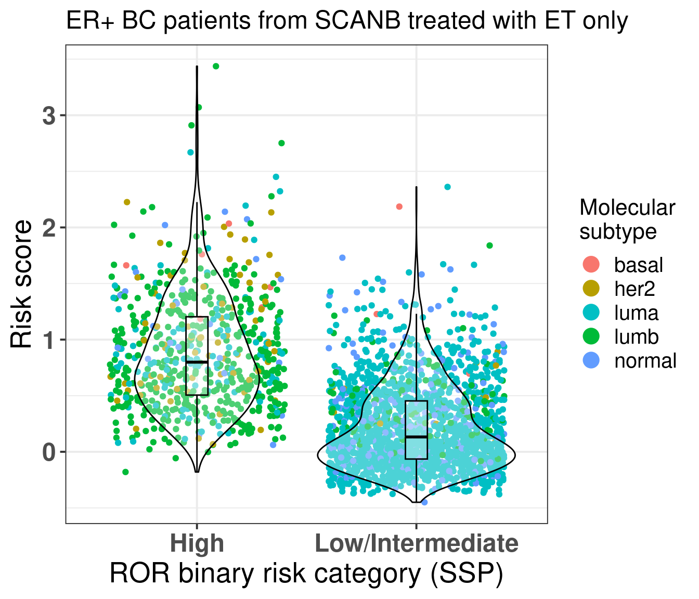
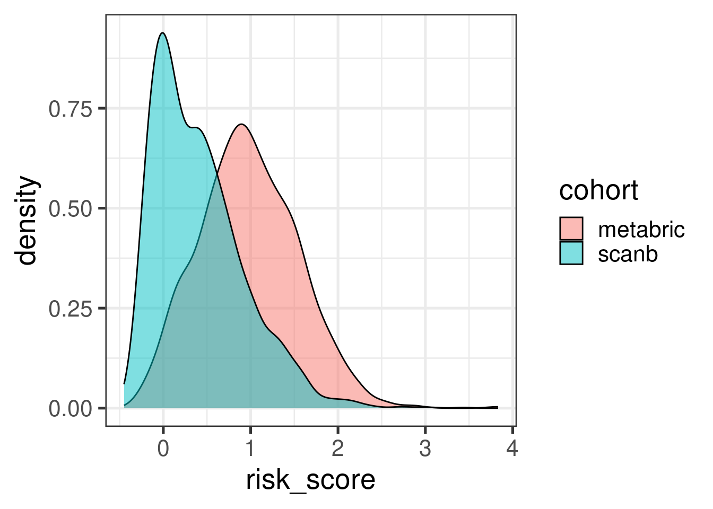
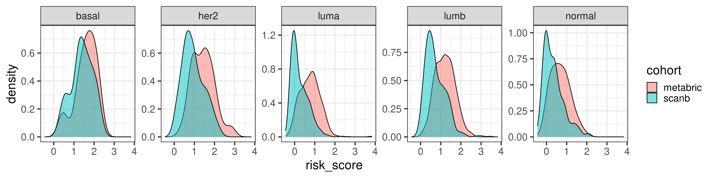
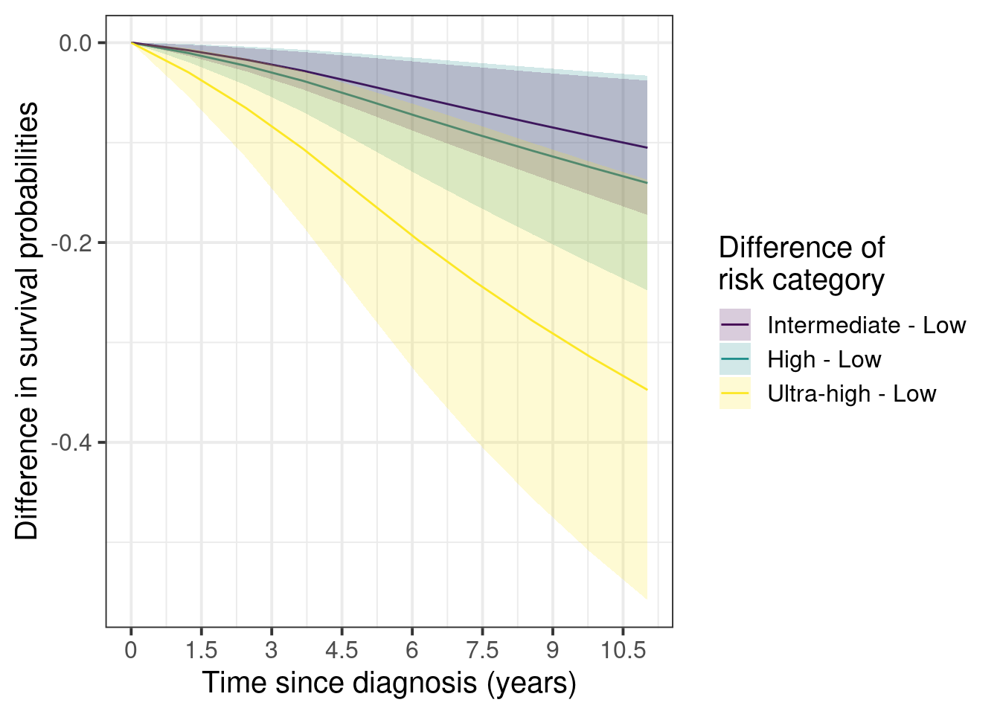
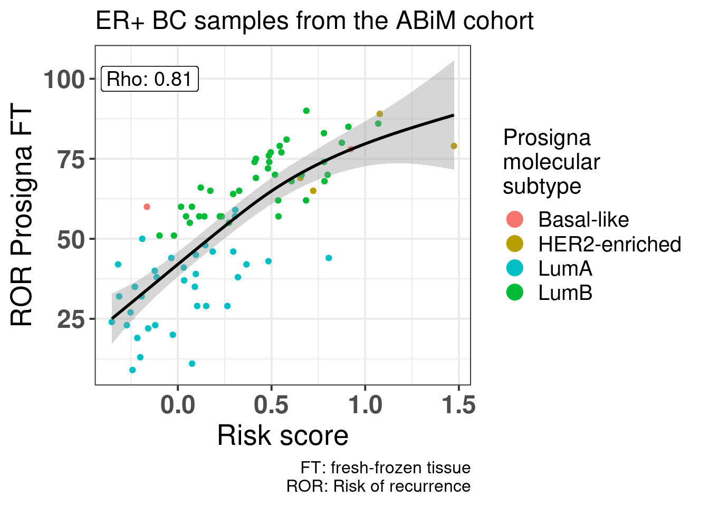

Several risk signatures were developed over the years using transcriptomic datasets. Some examples were given in the previous chapters, such as OncotypeDX, Prosigna and EndoPredict. They were all derived in a similar manner, subsetting genes related to usually estrogen and proliferation signaling and then using recurrence free survival data to calculate the risk scores.
In this chapter we introduce a new risk score that does not subset genes and uses the information of the molecular landscape. The concept is simple, we will use the third and fourth components as covariates in the survival modeling along with tumor size and node status. This way we avoid subsetting and selecting specific genes and we use all the information the molecular landscape is providing us. Also it avoids any kind of binning for patients based on molecular subtype, thus not being necessary calculating correlations with pre-defined molecular subtypes.
Later in the chapter we compare the risk score with the ROR binary categories: high and low/intermediate risk. We also compare the risk score with the ROR continuous value obtained by the SCANB team using nearest centroid classification (NCN). We use samples from patients that were treated with endocrine therapy only for the training of the risk score. Even though the ROR was trained on a cohort of patients that received no treatment, we can still compare the signatures. Buus et al. (2021) showed that the EndoPredict signature is highly correlated to ROR (\(\rho = 0.68\)), therefore we can to some extent take conclusions based on the ROR signature.
* The library is already synchronized with the lockfile.
We develop a risk score for early stage breast cancer patients that received only endocrine therapy (ET). The idea is similar to what was done with the EndoPredict signatures, but here we extend it by using the molecular landscape information. This provides a full framework where we can analyse the risk of recurrence even for patients that have high ER+ percentage.
5.1 Generating the risk score
We focus only on the endocrine treated patients. For the training part of the algorithm we use a subset of patients from the METABRIC cohort. We then test the risk scores in the test set and we further validate the score on SCANB.
We will generate two risk scores: one including only the principal components and another one including the clinical features of the patients when valiable, namely tumor size, node status and age (either having one or more lymph node with breast cancer cells or none).
We see that the coefficients are very similar to what was found before, it didn’t change much. Also when we include the principal components on the top of the clinical variables the log likelihood increases, which is a good indication:
Call:
survival::coxph(formula = Surv(time = rfs_months, event = rfs_status) ~
risk_score, data = test_set)
n= 371, number of events= 140
coef exp(coef) se(coef) z Pr(>|z|)
risk_score 0.8632 2.3707 0.1583 5.453 4.96e-08 ***
---
Signif. codes: 0 '***' 0.001 '**' 0.01 '*' 0.05 '.' 0.1 ' ' 1
exp(coef) exp(-coef) lower .95 upper .95
risk_score 2.371 0.4218 1.738 3.233
Concordance= 0.655 (se = 0.025 )
Likelihood ratio test= 28.56 on 1 df, p=9e-08
Wald test = 29.73 on 1 df, p=5e-08
Score (logrank) test = 29.78 on 1 df, p=5e-08
We see that the higher the risk score the worse it is for the patients treated only with endocrine therapy.
5.2 Validating the risk score on SCANB
We can now validate the risk score on the SCANB dataset.
Call:
survival::coxph(formula = as.formula(paste0("Surv(time = rfs_months, event = rfs_status) ~ ",
paste(c("risk_score"), collapse = "+"))), data = endo_only_scanb)
n= 2442, number of events= 175
coef exp(coef) se(coef) z Pr(>|z|)
risk_score 1.1248 3.0795 0.1138 9.885 <2e-16 ***
---
Signif. codes: 0 '***' 0.001 '**' 0.01 '*' 0.05 '.' 0.1 ' ' 1
exp(coef) exp(-coef) lower .95 upper .95
risk_score 3.079 0.3247 2.464 3.849
Concordance= 0.696 (se = 0.022 )
Likelihood ratio test= 78.2 on 1 df, p=<2e-16
Wald test = 97.71 on 1 df, p=<2e-16
Score (logrank) test = 96.79 on 1 df, p=<2e-16
Again the risk score is prognostic with a high coefficient, meaning that the higher the score the worse it is for the patient.
We now visualize a bit the risk scores developed here in terms of the molecular landscape. Figure 5.1
Figure 5.1: Molecular landscape of SCANB patients treated with only endocrine therapy and that have ER+ breast cancer. Only patients with risk score less than 2 are plotted here. There are only 26 patients out of 2829 with risk score higher than 2 that would skew the color scale.
We now investigate the risk score among patients that have high ER IHC percentage as well. We have seen that these patients have different outcomes based on the molecular estrogen signaling. We now investigate the effect of the risk score.
We see that the score is still prognostic, meaning that even patients that have high ER IHC percentage, there are those with higher risk. Note though that the analysis still is a bit limited due to the followup time that in median is 5.3 years.
We also compare the risk score for the high risk group and low/intermediate risk group of the ROR signature (Figure 5.2) obtained by the SCANB team using single sample predictor models, where rule based algorithms are used to determine if a patient is high or low/intermediate risk. They validate this on prosigna’s own sequencing and showed good results (Staaf et al. 2022).

Figure 5.2: Risk score stratified by binary category risk as defined by the SCANB team at (Staaf et al. 2022). ER+ BC patients that received only ET were considered.
As expected most of the patients in the high risk group are luminal B. The ROR signature was developed in such a way to get luminal B patients to be of high risk. But here we see that there is still an overlap between low/intermediate patients and high risk patients, suggesting that the new risk score has additional information. For assessing this hypothesis we perform recurrence free survival analysis with both variables and just the risk score and compare the likelihood of the two models using anova.
We see that by adding the risk score it provides aditional value on top of the binary category from prosigna. On top of that the SCANB team calculated also the ROR score based on the original paper. So we actually have the actual scores derived from the nearest centroid technique for all patients.
Figure 5.3 shows the comparison between risk score and the ROR score from prosigna calculated by using NC.
Figure 5.3: Comparison of the risk score developed here with the ROR from Prosigna.
There is a correlation but we see that among the luminal A patients there are still those that have high risk score besides a ROR lower than 50. Below we show the results of the spearman test on these two variables. We see they are correlated.
Spearman's rank correlation rho
data: endo_only_scanb$risk_score and endo_only_scanb$NCN.ROR.asT0
S = 1233308206, p-value < 2.2e-16
alternative hypothesis: true rho is not equal to 0
sample estimates:
rho
0.491857
With a p-value of:
[1] 5.832521e-149
We now evaluate the risk score only on luminal A patients that received just endocrine therapy.
Call:
survival::coxph(formula = as.formula(paste0("Surv(time = rfs_months, event = rfs_status) ~ ",
paste(c("risk_score", clin_vars), collapse = "+"))), data = endo_only_scanb %>%
dplyr::filter(pam50 == "luma"))
coef exp(coef) se(coef) z p
risk_score 1.548555 4.704666 0.730935 2.119 0.0341
tumor_size 0.003568 1.003574 0.016252 0.220 0.8262
node_statuspos -0.673885 0.509724 0.486784 -1.384 0.1662
age -0.014232 0.985869 0.012078 -1.178 0.2386
Likelihood ratio test=29.45 on 4 df, p=6.331e-06
n= 1502, number of events= 71
Even among these patients the score is prognostic, despite the number of events, the hazard ratio is relatively high here. If we do the survival analysis by using overall survival as endpoint the results are shown below.
Call:
survival::coxph(formula = as.formula(paste0("Surv(time = os_months, event = os_status) ~ ",
paste(c("risk_score", clin_vars), collapse = "+"))), data = endo_only_scanb %>%
dplyr::filter(pam50 == "luma"))
coef exp(coef) se(coef) z p
risk_score 5.046e-01 1.656e+00 4.293e-01 1.175 0.240
tumor_size -4.809e-05 1.000e+00 1.103e-02 -0.004 0.997
node_statuspos -2.390e-01 7.874e-01 2.738e-01 -0.873 0.383
age 9.506e-02 1.100e+00 7.974e-03 11.921 <2e-16
Likelihood ratio test=234.5 on 4 df, p=< 2.2e-16
n= 1502, number of events= 227
Risk score still an estimated hazard ratio higher than 1, with more variability though, still in the expected direction. So we see that this signature provides aditional information to the PAM50 ROR signature.
Call:
survival::coxph(formula = as.formula(paste0("Surv(time = rfs_months, event = rfs_status) ~ ",
paste(c("risk_score", "NCN.ROR.asT0", clin_vars), collapse = "+"))),
data = endo_only_scanb %>% dplyr::filter(pam50 == "luma"))
coef exp(coef) se(coef) z p
risk_score 0.94883 2.58268 0.98705 0.961 0.336
NCN.ROR.asT0 0.01038 1.01043 0.01120 0.927 0.354
tumor_size 0.01689 1.01704 0.02187 0.772 0.440
node_statuspos -0.31774 0.72779 0.62635 -0.507 0.612
age -0.01230 0.98778 0.01221 -1.007 0.314
Likelihood ratio test=30.31 on 5 df, p=1.283e-05
n= 1502, number of events= 71
5.3 Standardized survival curves for SCANB
We now use also the standardized survival curves as suggested in the paper (Syriopoulou et al. 2022). For this we use the package flexsurv along with the functions flexsurvspline to model the baseline hazard using splines and then to calculate the standardized survival curves we use the function standsurv.
For the sake of interpretation we categorize the risk score in 4 categories, a low, intermediate, high and ultra-high risk. The thresholds are based on the data, we use the quartiles. We understand that we loose power when doing this but we are able to communicate better the information. For comparison we first show the spline based model on the continous score.
# A tibble: 8 × 5
term estimate std.error statistic p.value
<chr> <dbl> <dbl> <dbl> <dbl>
1 gamma0 -7.84 0.643 NA NA
2 gamma1 0.971 0.299 NA NA
3 gamma2 0.0661 0.290 NA NA
4 gamma3 -0.384 0.901 NA NA
5 gamma4 0.405 0.840 NA NA
6 risk_score 1.66 0.263 6.32 1.30e-10
7 tumor_size -0.00950 0.00735 -1.29 9.80e- 2
8 node_statuspos -0.718 0.224 -3.20 6.80e- 4
We use the “hazard” scale to define the proportional hazards model. The estimate is above 0 (1.8), meaning that the higher the risk score the worse it is. Moreover, the p-value is 1.1e-14.
Before moving on we just compare the risk score distributions between METABRIC and SCANB.

The distribution shift makes sense as the majority of patients in SCANB have lower tumor stage. Let us compare by molecular subtype.

In general they agree a bit more when looking by subtype.
We now proceed with the categorized data for visualization purposes. We also use the survival scale for the interpretation. For the categories we use METABRIC’s quantiles instead of SCANB. This way we used the training dataset for defining the risk scores and then we use SCAN-B to further validate the differences.
The patients are stratified in the categories low, intermediate, high and ultra-high. For the analysis the low category is set as the baseline.
First we show the marginal survival curves.
Figure 5.4
And now the marginal curves for the differences with the low risk as the baseline.

Figure 5.5
Here we see that the difference between low and ultra-high can be as high as 40%. On the other hand the differences between intermediate and low stay around 3 to 10% after 5 years.
The confidence intervals are larger as you increase the risk groups due to the number of patients available in each category.
risk_score_category
1
2
low
95% (1,539)
5% (79)
intermediate
91% (375)
9% (39)
high
89% (198)
11% (24)
ultra-high
77% (105)
23% (31)
Total
93% (2,217)
7% (173)
Still the number of events in percentage goes up as one goes up in the risk category, as expected.
5.4 Risk score and POETIC trial
We can evaluate one of the two risk scores, the one using only the principal components, in the POETIC trial data. The first question we can address is if there is difference in scores in the baseline tissue (Figure 5.6).
Figure 5.6: Risk scores for responders and non-responders in the baseline tumor tissue.
We see in the Figure 5.6 that in average the non responders have higher risk scores. Now if we compare the risk scores between baseline and surgery, the slope of the line that fits for each group separately, responder and non responder, is different. The slope for the non responders is parallel to the identity line going through the origin with a slope of 1, meaning that there is not much change of risk upon the treatment. On other hand, for the responder group the slope is decreased and has a value lower than 1, meaning that the risk is decreased upon aromatase inhibition after two weeks (Figure 5.7).
Figure 5.7: Comparison of risk scores using the PCs only before and after two weeks of aromatase inhibitors in post-menopausal women. The colored lines correspond do the linear regression for each response status group separately.
5.5 Risk score vs pathways
We now compare the risk score with pathways of interest as discussed in the previous sections. Again we only look at the patients that received only endocrine therapy in both SCANB and METABRIC.
Figure 5.8: Risk score versus pathways of interest. Each subplot corresponds to a different pathway.
Figure 5.8 shows that in general the signatures are not strongly associated with one of the main pathways displayed here. On the other hand, Figure 5.9 shows the association between the signatures and the risk scores derived only from the principal components.
Figure 5.9: Risk score derived from the principal components only versus pathways of interest. Each subplot corresponds to a different pathway.
In this case we see some associations with G2M checkpoint in general and a bit with estrogen signaling. We now calculate the correlation plots for each one of these pathways with both risk scores.
Figure 5.10: Correlation matrix for all pathways of interest and the two risk scores, both including the clinical factors and without the clinical factors.
Figure 5.10 shows that G2M checkpoint is highly correlated with the risk score using only the principal components (\(\rho = 0.72\)). When you include the clinical factors this value decreases. Moreover, DNA repair is highly associated with RS PC. Estrogen signaling was not so important here in the signatures surprisingly.
If we subselect only the SCANB samples we can recalculate those values and compare with the NCN ROR score.
Figure 5.11: Correlation matrix for all pathways of interest and the two risk scores, both including the clinical factors and without the clinical factors.
5.6 ABiM and nCounter data
In (Staaf et al. 2022), the authors validated their approach of using RNA-seq instead of nCounter data by showing how one can get the ROR and compared to nCounter data sequenced at their facility and sent to prosigna for the calculation of the risk of recurrence. They have matched RNA-seq data as well. Here we will use the ROR obtained from the nCounter data and use the RNA-seq to calculate the risk score here developed.
Total number of stable genes: 44
Total number of genes: 1044
Number of samples: 100
Figure 5.12 shows the embedding of the ABiM cohort, it matches perfectly the molecular landscape.
Figure 5.12: Embedding of all samples from TCGA, SCNAB and METABRIC including the samples from ABiM 100 that have matched nCounter data.
Figure 5.13 shows how well the ABiM cohort actually overlays with the SCANB dataset, which makes sense as the processing pipeline is all similar.
Figure 5.13: Biplot of first two PCA components from ABiM 100, TCGA, SCANB and METABRIC. The normal cohort is highlighted in the plot and has bigger dot size.
And now we move on and calculate the risk scores for the ABiM cohort.

Figure 5.14: Correlation between risk score calculated based on the principal components and clinical factors versus the Prosigna ROR obtained from the nCounter data and evaluated by Prosigna. Cohort used is the ABiM 100 samples.
Figure 5.14 shows that there is a positive correlation between the risk score and ROR obtained from Prosigna. We see that some of the luminal A patients have higher ROR but lower ROR. Also, among luminal B patients there were some with the same ROR but different risk score, showing that the risk. Also some of the basal samples have smaller ROR than some of the luminal B and A samples, and the risk score captures these differences, i.e., all basal samples have risk scores higher than 0.75.
Buus, Richard, Ivana Sestak, Ralf Kronenwett, Sean Ferree, Catherine A. Schnabel, Frederick L. Baehner, Elizabeth A. Mallon, Jack Cuzick, and Mitch Dowsett. 2021. “Molecular Drivers of Onco\(\less\)i\(\greater\)type\(\less\)/i\(\greater\)DX, Prosigna, EndoPredict, and the Breast Cancer Index: A TransATAC Study.”Journal of Clinical Oncology 39 (2): 126–35. https://doi.org/10.1200/jco.20.00853.
Staaf, Johan, Jari Häkkinen, Cecilia Hegardt, Lao H. Saal, Siker Kimbung, Ingrid Hedenfalk, Tonje Lien, et al. 2022. “RNA Sequencing-Based Single Sample Predictors of Molecular Subtype and Risk of Recurrence for Clinical Assessment of Early-Stage Breast Cancer.”Npj Breast Cancer 8 (1). https://doi.org/10.1038/s41523-022-00465-3.
Syriopoulou, Elisavet, Tove Wästerlid, Paul C. Lambert, and Therese M.-L. Andersson. 2022. “Standardised Survival Probabilities: A Useful and Informative Tool for Reporting Regression Models for Survival Data.”British Journal of Cancer 127 (10): 1808–15. https://doi.org/10.1038/s41416-022-01949-6.
Source Code
# Risk score modelSeveral risk signatures were developed over the years using transcriptomicdatasets. Some examples were given in the previous chapters, such as OncotypeDX, Prosigna and EndoPredict. They were all derived in a similarmanner, subsetting genes related to usually estrogen and proliferation signaling and then using recurrence free survival data to calculatethe risk scores. In this chapter we introduce a new risk score that does not subsetgenes and uses the information of the molecular landscape. The conceptis simple, we will use the third and fourth components as covariates inthe survival modeling along with tumor size and node status. Thisway we avoid subsetting and selecting specific genes and we use allthe information the molecular landscape is providing us. Also it avoidsany kind of binning for patients based on molecular subtype, thus not beingnecessary calculating correlations with pre-defined molecular subtypes.Later in the chapter we compare the risk score with the ROR binary categories: high and low/intermediate risk. We also compare the risk scorewith the ROR continuous value obtained by the SCANB team using nearestcentroid classification (NCN). We use samples from patients that were treatedwith endocrine therapy only for the training of the risk score. Even though the ROR was trained on a cohort of patients that received no treatment, we can still compare the signatures. @Buus2021 showed that the EndoPredict signature is highly correlated to ROR ($\rho = 0.68$), therefore we can to some extent take conclusions based on the ROR signature.```{r setup}renv::restore()library(tidyverse)library(ggplot2)library(PCAtools)library(singscore)library(SummarizedExperiment)library(survival)library(flexsurv)source("../R/utils.R")source("../R/first_run.R")# the following script load all data necessary to run the chunks.# the data is generated from this quarto document itself, therefore# if you are running this documents the first time and don't have the# files, comment the following lines. Moreover, if this is your first# time running the document, you should run all chunks, to generate # all the necessary files, if you don't have them. Once all files # are saved and available in the respective folder, the following# lines can be executed. if (first_run){ load_at_setup <- FALSE} else { load_at_setup <- TRUE}name_document <- "risk_score"sapply( paste0("../../results/", c("plots", "rds_files", "tables"), "/", name_document), dir.create, showWarnings = FALSE, recursive = TRUE)source("../R/load_rds_files.R")# by setting the dev to png and pdf, this saves the figures in a specific# folder in both formats. moreover, since png is coming first, it shows# this figure when rendering the html. What is nice about this is that it# inherits the properties from the chunk to save the figure, so no need# to use ggplot2::ggsave to save the plots. this also works knitr::opts_chunk$set(dev = c('png', 'pdf'))options(bitmapType = 'cairo')```We develop a risk score for early stage breast cancer patients that received only endocrine therapy (ET). The idea is similar to what wasdone with the EndoPredict signatures, but here we extend it by using themolecular landscape information. This provides a full framework wherewe can analyse the risk of recurrence even for patients that have high ER+ percentage.## Generating the risk scoreWe focus only on the endocrine treated patients. For the training partof the algorithm we use a subset of patients from the METABRIC cohort.We then test the risk scores in the test set and we further validatethe score on SCANB. We will generate two risk scores: one including only the principal components and another one including the clinical features of the patients when valiable, namely tumor size, node status and age (either havingone or more lymph node with breast cancer cells or none). ```{r}# start by preparing the datasets so it is easily used laterdf_pca_metabric <- df_pca %>% dplyr::filter(cohort =="metabric") %>% dplyr::mutate(TreatGroup = dplyr::case_when( HORMONE_THERAPY =="YES"& CHEMOTHERAPY =="YES"~"ChemoEndo", HORMONE_THERAPY =="YES"& CHEMOTHERAPY =="NO"~"Endo",TRUE~"Other" )) %>% dplyr::mutate(node_status =ifelse( LYMPH_NODES_EXAMINED_POSITIVE >0, "pos","neg" )) %>% dplyr::mutate(node_status =factor(node_status, levels =c("neg", "pos")),tumor_size = TUMOR_SIZE )df_pca_scanb <- df_pca %>% dplyr::filter(cohort =="scanb") %>% dplyr::mutate(node_status =ifelse( node_group =="N0", "neg","pos" )) %>% dplyr::mutate(node_status =factor( node_status, levels =c("neg", "pos") ))# select only the endocrine treated patientsendo_only_scanb <- df_pca_scanb %>% dplyr::filter( TreatGroup =="Endo"&!is.na(rfs_status) &!is.na(rfs_months) & er_status =="pos"&!is.na(age) &!is.na(tumor_size) &!is.na(node_status) )endo_only_metabric <- df_pca_metabric %>% dplyr::filter( HORMONE_THERAPY =="YES"& CHEMOTHERAPY =="NO"&!is.na(rfs_status) &!is.na(rfs_months) & er_status =="pos"&!is.na(age) &!is.na(tumor_size) &!is.na(node_status) )# set the seed so we can reproduce the results later and then# select the training cohortset.seed(12938)training_set <- endo_only_metabric %>% dplyr::slice_sample(prop =0.6)# we use the two PCs we have been investigating, but that does not mean# other PCs can't be usedpcs_to_use <-paste0("PC", c(3:4))clin_vars <-c("tumor_size", "node_status", "age")risk_score_model <- survival::coxph(as.formula(paste0("Surv(time = rfs_months, event = rfs_status) ~ ",paste(c(pcs_to_use, clin_vars), collapse ="+") )),data = training_set)saveRDS( risk_score_model,"../../results/rds_files/risk_score/risk_score_model.rds")write.csv( broom::tidy(risk_score_model, exponentiate =TRUE, conf.int =TRUE) %>% dplyr::rename(hazard_ratio = estimate),"../../results/tables/risk_score/risk_score_model.csv")``````{r}summary(risk_score_model)```We see that all coefficients have less variability than age. Now we calculate only the risk score based on the components. ```{r}risk_score_model_pcs <- survival::coxph(as.formula(paste0("Surv(time = rfs_months, event = rfs_status) ~ ",paste(c(pcs_to_use), collapse ="+") )),data = training_set)risk_score_model_clins <- survival::coxph(as.formula(paste0("Surv(time = rfs_months, event = rfs_status) ~ ",paste(c(clin_vars), collapse ="+") )),data = training_set)saveRDS( risk_score_model_pcs,"../../results/rds_files/risk_score/risk_score_model_pcs.rds")``````{r}summary(risk_score_model_pcs)```We see that the coefficients are very similar to what was found before,it didn't change much. Also when we include the principal components on thetop of the clinical variables the log likelihood increases, which is a good indication: ```{r}anova(risk_score_model_clins, risk_score_model)``````{r}# first get the coefficients coefs_risk_model <-coef(risk_score_model)coefs_risk_model_pcs <-coef(risk_score_model_pcs)# let us save them so they can be used later as wellsaveRDS( coefs_risk_model,"../../results/rds_files/risk_score/coefs_risk_model.rds")saveRDS( coefs_risk_model_pcs,"../../results/rds_files/risk_score/coefs_risk_model_pcs.rds")# now we can calculate the scores for all the patients. For TCGA and POETIC# we do not have tumor size, so for those we calculate the risk score based# on the components only.endo_only_scanb$risk_score <-calculate_risk_score( coefs_risk_model, endo_only_scanb)endo_only_scanb$risk_score_pcs <-calculate_risk_score( coefs_risk_model_pcs, endo_only_scanb, is_node =FALSE)endo_only_metabric$risk_score <-calculate_risk_score( coefs_risk_model, endo_only_metabric)endo_only_metabric$risk_score_pcs <-calculate_risk_score( coefs_risk_model_pcs, endo_only_metabric, is_node =FALSE)df_pca_metabric$risk_score <-calculate_risk_score( coefs_risk_model, df_pca_metabric) df_pca_scanb$risk_score <-calculate_risk_score(coefs_risk_model, df_pca_scanb)# we can now calculate the score for all samples based on PC3 and PC4df_pca$risk_score_pcs <-calculate_risk_score( coefs_risk_model_pcs, df_pca, is_node =FALSE)test_set <- endo_only_metabric %>% dplyr::filter(!(sample_name %in% training_set$sample_name))risk_score_test <- survival::coxph(Surv(time = rfs_months, event = rfs_status) ~ risk_score,data = test_set)risk_score_test_clins <- survival::coxph(Surv(time = rfs_months, event = rfs_status) ~ risk_score + tumor_size + npi,data = test_set)```Now we use the test set to calculate the score.```{r}summary(risk_score_test)```We see that the higher the risk score the worse it is for the patients treated only with endocrine therapy. ## Validating the risk score on SCANBWe can now validate the risk score on the SCANB dataset. ```{r}risk_score_scanb <- survival::coxph(as.formula(paste0("Surv(time = rfs_months, event = rfs_status) ~ ",paste(c("risk_score"), collapse ="+") )),data = endo_only_scanb)summary(risk_score_scanb)```Again the risk score is prognostic with a high coefficient, meaningthat the higher the score the worse it is for the patient. We now visualize a bit the risk scores developed here in terms of the molecular landscape. @fig-risk-endo-pam50```{r, fig.width=7, fig.height=5}#| label: fig-risk-endo-pam50#| fig-cap: Molecular landscape of SCANB patients treated with only#| endocrine therapy and that have ER+ breast cancer. Only patients#| with risk score less than 2 are plotted here. There are only 26#| patients out of 2829 with risk score higher than 2 that would skew #| the color scale.endo_only_scanb %>% dplyr::filter(risk_score <= 2) %>% ggplot2::ggplot(aes(x = PC3, y = PC4, z = risk_score)) + ggplot2::stat_summary_hex(bins = 25) + ggplot2::scale_fill_viridis_c() + ggplot2::theme_bw(base_size = 15) + ggplot2::labs( fill = "Risk score", title = paste0( "Clinical risk score for SCANB patients treated\nwith ET only" ) ) + change_plot_aes_point()```We now investigate the risk score among patients that have high ER IHCpercentage as well. We have seen that these patients have different outcomesbased on the molecular estrogen signaling. We now investigate the effectof the risk score. ```{r}risk_score_scanb_highER <- survival::coxph(as.formula(paste0("Surv(time = rfs_months, event = rfs_status) ~ ",paste(c("risk_score"), collapse ="+") )),data = endo_only_scanb %>% dplyr::filter(ER.pct >=90& risk_score <2))summary(risk_score_scanb_highER)```We see that the score is still prognostic, meaning that even patientsthat have high ER IHC percentage, there are those with higher risk. Notethough that the analysis still is a bit limited due to the followup timethat in median is `r format(median(endo_only_scanb$rfs_month)/12, digits = 2)`years.We also compare the risk score for the high risk group and low/intermediaterisk group of the ROR signature (@fig-risk-ror) obtained by the SCANB team using single sample predictor models, where rule based algorithms are used to determineif a patient is high or low/intermediate risk. They validate this onprosigna's own sequencing and showed good results [@SCANB2022].```{r, fig.width=7, fig.height=6}#| label: fig-risk-ror#| fig-cap: Risk score stratified by binary category risk as defined #| by the SCANB team at [@SCANB2022]. ER+ BC patients that received #| only ET were considered.endo_only_scanb %>% ggplot2::ggplot( aes(x = SSP.ROR.binary.risk.cat, y = risk_score, color = pam50) ) + ggplot2::geom_jitter() + ggplot2::geom_violin(color = "black", alpha = 0.3) + ggplot2::geom_boxplot( width=0.1, color = "black", alpha = 0.3, outlier.shape = NA ) + ggplot2::theme_bw(base_size = 15) + ggplot2::labs( x = "ROR binary risk category (SSP)", title = paste0( "ER+ BC patients from SCANB treated with ET only" ), y = "Risk score", color = "Molecular\nsubtype" ) + ggplot2::scale_color_manual( values = get_colors_pam50(endo_only_scanb) ) + change_plot_aes_point() + change_guides_point()```As expected most of the patients in the high risk group are luminal B.The ROR signature was developed in such a way to get luminal B patients to beof high risk. But here we see that there is still an overlap betweenlow/intermediate patients and high risk patients, suggesting that thenew risk score has additional information. For assessing this hypothesiswe perform recurrence free survival analysis with both variables and justthe risk score and compare the likelihood of the two models using anova. ```{r}risk_score_scanb_ROR <- survival::coxph(as.formula(paste0("Surv(time = rfs_months, event = rfs_status) ~ ",paste(c("risk_score", "SSP.ROR.binary.risk.cat", clin_vars), collapse ="+" ) )),data = endo_only_scanb)risk_score_scanb_onlyROR <- survival::coxph(as.formula(paste0("Surv(time = rfs_months, event = rfs_status) ~ ",paste(c(clin_vars, "SSP.ROR.binary.risk.cat"), collapse ="+" ) )),data = endo_only_scanb)anova_out <-anova(risk_score_scanb_onlyROR, risk_score_scanb_ROR)write.csv( broom::tidy(anova_out),"../../results/tables/risk_score/anova_ROR_RR.csv")``````{r}anova_out```We see that by adding the risk score it provides aditional value on top of the binary category from prosigna. On top of that the SCANB team calculatedalso the ROR score based on the original paper. So we actually have the actual scores derived from the nearest centroid technique for all patients. @fig-ror-riskscore-comparison shows the comparison between risk score and the ROR score from prosigna calculated by using NC. ```{r}#| label: fig-ror-riskscore-comparison#| fig-cap: Comparison of the risk score developed here with the ROR from#| Prosigna. endo_only_scanb %>% ggplot2::ggplot(aes(x = risk_score, NCN.ROR.asT0, color = pam50)) + ggplot2::geom_point(alpha =0.7) + ggplot2::theme_bw(base_size =15) + ggplot2::labs(x ="Risk score",y ="ROR (by NC)",title =paste0("Clinical risk score vs ROR for SCANB" ),subtitle ="Patients treated with ET only",color ="Molecular\nsubtype" ) + ggplot2::scale_color_manual(values =get_colors_pam50(endo_only_scanb) ) +change_guides_point() +change_plot_aes_point()```There is a correlation but we see that among the luminal A patients there are still those that have high risk score besides a ROR lower than50. Below we show the results of the spearman test on these two variables.We see they are correlated.```{r}spearman_riskscore_ror <-cor.test( endo_only_scanb$risk_score, endo_only_scanb$NCN.ROR.asT0,method ="spearman", exact =FALSE)spearman_riskscore_ror```With a p-value of:```{r}spearman_riskscore_ror$p.value```We now evaluate the risk score only on luminal A patients that received just endocrine therapy.```{r}risk_score_scanb_luma <- survival::coxph(as.formula(paste0("Surv(time = rfs_months, event = rfs_status) ~ ",paste(c("risk_score", clin_vars), collapse ="+") )),data = endo_only_scanb %>% dplyr::filter(pam50 =="luma"))risk_score_scanb_luma```Even among these patients the score is prognostic, despite the number of events, the hazard ratio is relatively high here. If we do the survivalanalysis by using overall survival as endpoint the results are shown below.```{r}risk_score_scanb_luma_os <- survival::coxph(as.formula(paste0("Surv(time = os_months, event = os_status) ~ ",paste(c("risk_score", clin_vars), collapse ="+") )),data = endo_only_scanb %>% dplyr::filter(pam50 =="luma"))risk_score_scanb_luma_os```Risk score still an estimated hazard ratio higher than 1, with more variability though, still in the expected direction. So we see that this signature provides aditional information to the PAM50 ROR signature. ```{r}risk_score_scanb_luma_RORonly <- survival::coxph(as.formula(paste0("Surv(time = rfs_months, event = rfs_status) ~ ",paste(c("NCN.ROR.asT0", clin_vars), collapse ="+") )),data = endo_only_scanb %>% dplyr::filter(pam50 =="luma"))risk_score_scanb_luma <- survival::coxph(as.formula(paste0("Surv(time = rfs_months, event = rfs_status) ~ ",paste(c("risk_score", "NCN.ROR.asT0", clin_vars), collapse ="+") )),data = endo_only_scanb %>% dplyr::filter(pam50 =="luma"))risk_score_scanb_luma```## Standardized survival curves for SCANBWe now use also the standardized survival curves as suggested in the paper [@Syriopoulou2022]. For this we use the package`flexsurv` along with the functions `flexsurvspline` to modelthe baseline hazard using splines and then to calculate the standardized survival curves we use the function `standsurv`.For the sake of interpretation we categorize the risk score in 4 categories,a low, intermediate, high and ultra-high risk. The thresholds are based on the data, we use the quartiles. We understand that we loose powerwhen doing this but we are able to communicate better the information. For comparison we first show the spline based model on the continous score.```{r}fit_scanb_splines <- flexsurv::flexsurvspline(formula =Surv(rfs_months, rfs_status) ~ risk_score + tumor_size + node_status,data = endo_only_scanb,k =3,scale ="hazard")broom::tidy(fit_scanb_splines)```We use the "hazard" scale to define the proportional hazards model. Theestimate is above 0 (1.8), meaning that the higher the risk score theworse it is. Moreover, the p-value is 1.1e-14. Before moving on we just compare the risk score distributions between METABRICand SCANB.```{r}quartiles_risk_score_metabric <-quantile( endo_only_metabric$risk_score, probs =c(0, .25, .5, .75, 1))quartiles_risk_score_scanb <-quantile( endo_only_scanb$risk_score, probs =c(0, .25, .5, .75, 1))quartiles_risk_score_all <-data.frame(metabric = quartiles_risk_score_metabric,scanb = quartiles_risk_score_scanb)col_to_select <-c("sample_name", "risk_score", "cohort", "pam50")risk_score_all <- dplyr::bind_rows( endo_only_metabric[, col_to_select], endo_only_scanb[, col_to_select]) risk_score_all %>% ggplot2::ggplot(aes(x = risk_score, fill = cohort)) + ggplot2::geom_density(alpha =0.5) + ggplot2::theme_bw(base_size =20)```The distribution shift makes sense as the majority of patients in SCANB havelower tumor stage. Let us compare by molecular subtype.```{r, fig.width=16, fig.height=4}risk_score_all %>% dplyr::filter(pam50 != "claudin-low") %>% ggplot2::ggplot(aes(x = risk_score, fill = cohort)) + ggplot2::geom_density(alpha = 0.5) + ggplot2::facet_wrap(~pam50, nrow = 1, scales = "free_y") + ggplot2::theme_bw(base_size = 20)```In general they agree a bit more when looking by subtype. We now proceed with the categorized data for visualization purposes. Wealso use the survival scale for the interpretation. For the categories weuse METABRIC's quantiles instead of SCANB. This way we used the training dataset for defining the risk scores and then we use SCAN-B to furthervalidate the differences.```{r}which_cohort_risk_strat <-"metabric"quartiles_risk_score <- quartiles_risk_score_all[, which_cohort_risk_strat]```The quartiles are (0, 0.25, 0.5, 0.75 and 1):```{r}quartiles_risk_score```The patients are stratified in the categories low, intermediate,high and ultra-high. For the analysis the low category is set as thebaseline.```{r}endo_only_scanb <- endo_only_scanb %>% dplyr::mutate(risk_score_category = dplyr::case_when( dplyr::between( risk_score, quartiles_risk_score[1], quartiles_risk_score[2] ) ~"low", dplyr::between( risk_score, quartiles_risk_score[2], quartiles_risk_score[3] ) ~"intermediate", dplyr::between( risk_score, quartiles_risk_score[3], quartiles_risk_score[4] ) ~"high", dplyr::between( risk_score, quartiles_risk_score[4], quartiles_risk_score[5] ) ~"ultra-high" )) %>% dplyr::mutate(risk_score_category =factor( risk_score_category, levels =c("low", "intermediate", "high", "ultra-high") ) )fit_scanb_splines_category <- flexsurv::flexsurvspline(formula =Surv(rfs_months, rfs_status) ~ risk_score_category + tumor_size + node_status,data = endo_only_scanb,k =3)standardized_survival_curves <- flexsurv::standsurv( fit_scanb_splines_category,type ="survival",at =list(list(risk_score_category ="low"),list(risk_score_category ="intermediate"),list(risk_score_category ="high"),list(risk_score_category ="ultra-high") ),t =seq(0, fit_scanb_splines_category$data$Y[, "time"] %>% max,length=10 ),ci =TRUE,boot =FALSE)standardized_survival_curves_contrast <- flexsurv::standsurv( fit_scanb_splines_category,type ="survival",at =list(list(risk_score_category ="low"),list(risk_score_category ="intermediate"),list(risk_score_category ="high"),list(risk_score_category ="ultra-high") ), contrast ="difference",t =seq(0, fit_scanb_splines_category$data$Y[, "time"] %>% max,length=10 ),ci =TRUE,boot =FALSE)```First we show the marginal survival curves.```{r}#| label: fig-rfs-marginal-curvelabels_risk_score <-c("Low", "Intermediate", "High", "Ultra-high")labels_risk_score_breaks <-paste0("risk_score_category=",c("low", "intermediate", "high", "ultra-high"))plot(standardized_survival_curves, ci =TRUE) + ggplot2::guides(color=guide_legend(ncol=1)) + ggplot2::scale_color_manual(labels = labels_risk_score,values = viridis::viridis(n =4),breaks = labels_risk_score_breaks ) + ggplot2::scale_fill_manual(labels = labels_risk_score,values = viridis::viridis(n =4),breaks = labels_risk_score_breaks ) + ggplot2::scale_x_continuous(labels =function(x) x/12,breaks =seq(0, 200, by =18) ) + ggplot2::labs(x ="Time since diagnosis (years)",y ="Survival probability",color ="Risk score\ncategory",fill ="Risk score\ncategory" ) + ggplot2::theme_bw(base_size =15) + ggplot2::theme(legend.position ="right")```And now the marginal curves for the differences with the lowrisk as the baseline.```{r}#| label: fig-rfs-difference-marginal-curvelabels_risk_score <-paste0(c("Intermediate", "High", "Ultra-high")," - Low")labels_risk_score_breaks <-paste0("risk_score_category=",c("intermediate", "high", "ultra-high")," vs risk_score_category=low")plot(standardized_survival_curves_contrast, ci =TRUE, contrast =TRUE) + ggplot2::guides(color=guide_legend(ncol=1)) + ggplot2::scale_color_manual(labels = labels_risk_score,values = viridis::viridis(n =3),breaks = labels_risk_score_breaks ) + ggplot2::scale_fill_manual(labels = labels_risk_score,values = viridis::viridis(n =3),breaks = labels_risk_score_breaks ) + ggplot2::scale_x_continuous(labels =function(x) x/12,breaks =seq(0, 200, by =18) ) + ggplot2::labs(x ="Time since diagnosis (years)",y ="Difference in survival probabilities",color ="Difference of\nrisk category",fill ="Difference of\nrisk category" ) + ggplot2::theme_bw(base_size =15) + ggplot2::theme(legend.position ="right")```Here we see that the difference between low and ultra-high can beas high as 40%. On the other hand the differencesbetween intermediate and low stay around 3 to 10% after 5 years.The confidence intervals are larger as you increase the risk groupsdue to the number of patients available in each category.```{r}endo_only_scanb %>% dplyr::filter(!is.na(risk_score_category)) %>% janitor::tabyl(risk_score_category, rfs_status) %>% janitor::adorn_totals(c("row")) %>% janitor::adorn_percentages("row") %>% janitor::adorn_pct_formatting(rounding ="half up", digits =0) %>% janitor::adorn_ns() %>% kableExtra::kbl() %>% kableExtra::kable_classic(full_width =FALSE)```Still the number of events in percentage goes up as one goes up in therisk category, as expected.## Risk score and POETIC trialWe can evaluate one of the two risk scores, the one using only the principal components, in the POETIC trial data. The first question wecan address is if there is difference in scores in the baseline tissue (@fig-poetic-risk-score).```{r}#| label: fig-poetic-risk-score#| fig-cap: Risk scores for responders and non-responders in the baseline#| tumor tissue. df_pca %>% dplyr::filter( cohort =="poetic"& timepoint =="baseline"& is_responder !="not_available" ) %>% ggplot2::ggplot(aes(x = is_responder, y = risk_score_pcs)) + ggplot2::geom_violin(alpha =0.3) + ggplot2::geom_jitter() + ggplot2::labs(x ="Response status",y ="Risk score (PCs only)",title ="Risk score (PCs only) based on\nresponse status" ) + ggplot2::theme_bw(base_size =20) +change_plot_aes_point()```We see in the @fig-poetic-risk-score that in average the non respondershave higher risk scores. Now if we compare the risk scores betweenbaseline and surgery, the slope of the line that fits for each groupseparately, responder and non responder, is different. The slopefor the non responders is parallel to the identity line going throughthe origin with a slope of 1, meaning that there is not much change of riskupon the treatment. On other hand, for the responder group the slope isdecreased and has a value lower than 1, meaning that the risk is decreasedupon aromatase inhibition after two weeks (@fig-poetic-risk-base-surgery).```{r}#| label: fig-poetic-risk-base-surgery#| fig-cap: Comparison of risk scores using the PCs only before and after#| two weeks of aromatase inhibitors in post-menopausal women. The colored#| lines correspond do the linear regression for each response status#| group separately. df_pca %>% dplyr::filter( cohort =="poetic"& is_responder !="not_available" ) %>% tidyr::pivot_wider(id_cols =c("patient_nb", "is_responder"),names_from ="timepoint",values_from ="risk_score_pcs" ) %>% ggplot2::ggplot(aes(x = baseline, y = surgery, color = is_responder)) + ggplot2::geom_point() + ggplot2::geom_abline(slope =1, intercept =0, linetype ="dashed") + ggplot2::geom_smooth(method ="lm", formula ="y ~ x") + ggplot2::labs(x ="Baseline risk score",y ="Surgery risk score",title ="Risk score (PCs only)",color ="Is responder?" ) + ggplot2::scale_color_viridis_d() + ggplot2::theme_bw(base_size =20) +change_plot_aes_point()```## Risk score vs pathways We now compare the risk score with pathways of interest as discussed in theprevious sections. Again we only look at the patients that received onlyendocrine therapy in both SCANB and METABRIC.```{r}pathways_of_interest <-c("HALLMARK_G2M_CHECKPOINT"="G2M checkpoint","HALLMARK_EPITHELIAL_MESENCHYMAL_TRANSITION"="EMT","HALLMARK_DNA_REPAIR"="DNA repair","HALLMARK_ANDROGEN_RESPONSE"="Androgen response","HALLMARK_PI3K_AKT_MTOR_SIGNALING"="PI3K AKT MTOR signaling","SET_ERPR"="SET ER/PR","HALLMARK_ESTROGEN_RESPONSE_EARLY"="Estrogen early")endo_only_sm <- dplyr::bind_rows( endo_only_scanb, endo_only_metabric) %>% dplyr::select(dplyr::all_of(c(names(pathways_of_interest),"cohort","pam50","risk_score","risk_score_pcs" )))``````{r, fig.width=12, fig.height=10}#| label: fig-cor-risk-pathways#| fig-cap: Risk score versus pathways of interest. Each subplot corresponds#| to a different pathway. endo_only_sm %>% tidyr::pivot_longer( cols = names(pathways_of_interest), names_to = "pathway", values_to = "score" ) %>% ggplot2::ggplot(aes(x = risk_score, y = score)) + ggplot2::geom_point() + ggplot2::scale_color_manual( values = get_colors_pam50(endo_only_sm) ) + ggplot2::facet_wrap( ~pathway, labeller = as_labeller(pathways_of_interest), scales = "free_y" ) + ggplot2::labs( x = "Risk score", y = "Pathway score" ) + ggplot2::theme_bw(base_size = 20) + change_plot_aes_point()```@fig-cor-risk-pathways shows that in general the signatures are not strongly associated with one of the main pathways displayed here.On the other hand, @fig-cor-riskpcs-pathways shows the association betweenthe signatures and the risk scores derived only from the principal components.```{r, fig.width=12, fig.height=10}#| label: fig-cor-riskpcs-pathways#| fig-cap: Risk score derived from the principal components only#| versus pathways of interest. Each subplot corresponds#| to a different pathway. endo_only_sm %>% tidyr::pivot_longer( cols = c(names(pathways_of_interest)), names_to = "pathway", values_to = "score" ) %>% ggplot2::ggplot(aes(x = risk_score_pcs, y = score)) + ggplot2::geom_point() + ggplot2::scale_color_manual( values = get_colors_pam50(endo_only_sm) ) + ggplot2::facet_wrap( ~pathway, labeller = as_labeller(pathways_of_interest), scales = "free_y" ) + ggplot2::labs( x = "Risk score (principal components only)", y = "Pathway score" ) + ggplot2::theme_bw(base_size = 20) + change_plot_aes_point()```In this case we see some associations with G2M checkpoint in general and a bitwith estrogen signaling. We now calculate the correlation plots for each one of these pathways with both risk scores. ```{r}corr_values <-cor(endo_only_sm[ , c("risk_score", "risk_score_pcs", names(pathways_of_interest))], method ="spearman") names_corr <-c("Risk Score", "Risk Score (PCs only)", pathways_of_interest[rownames(corr_values)[3:nrow(corr_values)]])rownames(corr_values) <- names_corrcolnames(corr_values) <- names_corr``````{r, fig.width=10, fig.height=8}#| label: fig-corr-risk-pathways#| fig-cap: Correlation matrix for all pathways of interest and the two #| risk scores, both including the clinical factors and without the #| clinical factors.ggcorrplot::ggcorrplot( corr_values, #hc.order = TRUE, type = "lower", lab = TRUE, lab_size = 6, ggtheme = ggplot2::theme_bw(base_size = 15), tl.cex = 20) + change_plot_aes_point() + ggplot2::labs(x = "", y = "")```@fig-corr-risk-pathways shows that G2M checkpoint is highly correlatedwith the risk score using only the principal components ($\rho = 0.72$). When you include the clinical factors this value decreases. Moreover,DNA repair is highly associated with RS PC. Estrogen signaling was not so important here in the signatures surprisingly. If we subselect only the SCANB samples we can recalculate those valuesand compare with the NCN ROR score. ```{r}corr_values <-cor( endo_only_scanb %>% dplyr::select(dplyr::all_of(c("risk_score", "risk_score_pcs", "NCN.ROR.asT0",names(pathways_of_interest) ))), method ="spearman") names_corr <-c("Risk Score", "Risk Score (PCs only)", "NCN ROR", pathways_of_interest[rownames(corr_values)[4:nrow(corr_values)]])rownames(corr_values) <- names_corrcolnames(corr_values) <- names_corr``````{r, fig.width=10, fig.height=8}#| label: fig-corr-risk-pathways-scanb#| fig-cap: Correlation matrix for all pathways of interest and the two #| risk scores, both including the clinical factors and without the #| clinical factors.ggcorrplot::ggcorrplot( corr_values, #hc.order = TRUE, type = "lower", lab = TRUE, lab_size = 6, ggtheme = ggplot2::theme_bw(base_size = 15), tl.cex = 20) + change_plot_aes_point() + ggplot2::labs(x = "", y = "")```## ABiM and nCounter dataIn [@SCANB2022], the authors validated their approach of using RNA-seq instead of nCounter data by showing how one can get the ROR and compared to nCounter data sequenced at their facility andsent to prosigna for the calculation of the risk of recurrence. They have matched RNA-seq data as well. Here we will use the ROR obtained from the nCounter data and use the RNA-seq to calculate the risk score here developed. ```{r}# load the data and perform the normalization + embeddingload("../../data/scanb_2022/ABiM.100.mymatrix.Rdata")load("../../data/scanb_2022/Gene.ID.ann.Rdata")metadata <- readxl::read_excel("../../data/scanb_2022/sup_data_20230113.xlsx", sheet ="ABiM.100")abim_100 <- ABiM.100.mymatrixgene_id_ann <- Gene.ID.annrownames(abim_100) <- gene_id_ann[rownames(abim_100), "Gene.Name"]abim_100 <- abim_100[!duplicated(rownames(abim_100)), ]# add information so the risk score can be calculated later onmetadata$age <-0metadata$node_status <-ifelse( metadata$LN >1,"pos","neg")metadata$tumor_size <- metadata$Size.mmabim_100 <- SummarizedExperiment::SummarizedExperiment(assays =list(fpkm = abim_100,log2fpkm =log2(abim_100 +1) ),colData = metadata %>% data.frame %>%`rownames<-`(.$GEX.assay) %>% dplyr::mutate(sample_name = GEX.assay,pam50 =tolower(SSP.PAM50),ER.pct =NULL ))abim_100_normalized <-get_final_ranking_values(sum_exp = abim_100,assay_to_use ="log2fpkm",stable_genes = stable_genes,most_variable_genes =setdiff(rownames(pca_fit$loadings), stable_genes))# calculate the embeddingabim_100_df_pca <-get_pca_coordinates(abim_100_normalized, pca_fit) %>% dplyr::bind_cols( ., data.frame(cohort =rep("abim_100", ncol(abim_100_normalized))) ) %>% dplyr::mutate(sample_name =colnames(abim_100_normalized)) %>% dplyr::inner_join( .,colData(abim_100) %>% data.frame,by ="sample_name" ) %>% dplyr::bind_rows(., df_pca)# save all the resultssaveRDS( abim_100,"../../results/rds_files/risk_score/abim_100.rds")saveRDS( abim_100_df_pca %>% data.frame,"../../results/rds_files/risk_score/abim_100_df_pca.rds")saveRDS( abim_100_normalized,"../../results/rds_files/risk_score/abim_100_normalized.rds")```@fig-pca-abim100-cohort shows the embedding of the ABiM cohort, it matches perfectly the molecular landscape.```{r, fig.width=9, fig.height=6}#| label: fig-pca-abim100-cohort#| fig-cap: Embedding of all samples from TCGA, SCNAB and METABRIC including#| the samples from ABiM 100 that have matched nCounter data. abim_100_df_pca %>% ggplot2::ggplot( aes(x = PC3, y = PC4, color = cohort) ) + ggplot2::geom_point(aes(alpha = cohort, size = cohort)) + ggplot2::scale_size_manual(values = c( "abim_100" = 3, "tcga" = 1, "scanb" = 1, "metabric" = 1 ), guide = "none") + ggplot2::scale_alpha_manual(values = c( "abim_100" = 1, "tcga" = 0.1, "scanb" = 0.1, "metabric" = 0.1 ), guide = "none") + ggplot2::labs( color = "Cohort", alpha = "Cohort", size = "Cohort", title = paste0( "ABiM 100 cohort embedding" ), subtitle = "All samples from TCGA, SCANB and METABRIC are plotted" ) + ggplot2::theme_bw(base_size = 18) + change_plot_aes_point() + change_guides_point()```@fig-abim100-cohort shows how well the ABiM cohort actually overlays with the SCANB dataset, which makes sense as the processing pipelineis all similar. ```{r}#| label: fig-abim100-cohort#| fig-cap: Biplot of first two PCA components from ABiM 100, #| TCGA, SCANB and #| METABRIC. The normal cohort is highlighted in the plot and#| has bigger dot size.abim_100_df_pca %>% dplyr::filter(cohort !="poetic") %>% dplyr::slice(sample(1:n())) %>% ggplot2::ggplot(aes(x = PC1, y = PC2, color = cohort) ) + ggplot2::geom_point(aes(alpha = cohort, size = cohort)) + ggplot2::scale_size_manual(values =c("abim_100"=2, "tcga"=1,"scanb"=1,"metabric"=1 ), guide ="none") + ggplot2::scale_alpha_manual(values =c("abim_100"=1, "tcga"=0.1,"scanb"=0.1,"metabric"=0.1 ), guide ="none") + ggplot2::labs(color ="Cohort",alpha ="Cohort",size ="Cohort",title =paste0("First two components of ABiM 100"," cohort overlayed on all\nthe three ","big cohorts in the the molecular landscape" ),subtitle ="All samples from TCGA, METABRIC and SCANB are plotted" ) + ggplot2::theme_bw(base_size =14) +change_plot_aes_point() +change_guides_point()```And now we move on and calculate the risk scores for the ABiM cohort. ```{r}abim_100$risk_score <-calculate_risk_score( coefs_risk_model, abim_100_df_pca %>% dplyr::filter(cohort =="abim_100"),is_node =TRUE)``````{r}#| label: fig-rorft-riskscore-abim#| fig-cap: Correlation between risk score calculated based on #| the principal components and clinical factors versus the Prosigna#| ROR obtained from the nCounter data and evaluated by Prosigna. Cohort#| used is the ABiM 100 samples. df_abim_100 <-colData(abim_100) %>% data.framedf_abim_100 %>% dplyr::filter(!is.na(risk_score)) %>% ggplot2::ggplot(aes(x = risk_score,y = ProsignaFT.ROR,color = pam50 )) + ggplot2::geom_point() + ggplot2::scale_color_manual(values =get_colors_pam50(df_abim_100)) + ggplot2::geom_smooth(color ="black",method ="gam",formula = y ~s(x, bs ="cs") ) + ggplot2::theme_bw(base_size =15) + ggplot2::labs(x ="Risk score",y ="ROR Prosigna FT", color ="PAM50",title ="ABiM 100 samples and risk scores",caption ="FT: fresh-frozen tissue" ) +change_guides_point() +change_plot_aes_point()```@fig-rorft-riskscore-abim shows that there is a positive correlationbetween the risk score and ROR obtained from Prosigna. We seethat some of the luminal A patients have higher ROR but lower ROR. Also, among luminal B patients there were some with the same ROR but different risk score, showing that the risk. Also someof the basal samples have smaller ROR than some of the luminalB and A samples, and the risk score captures these differences, i.e.,all basal samples have risk scores higher than 0.75.